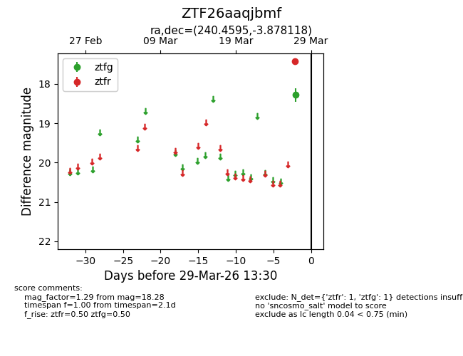
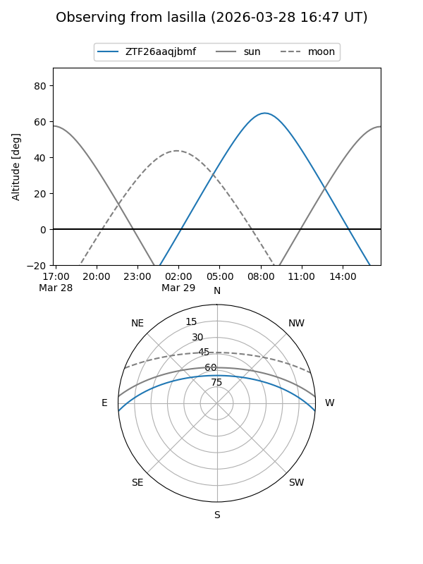
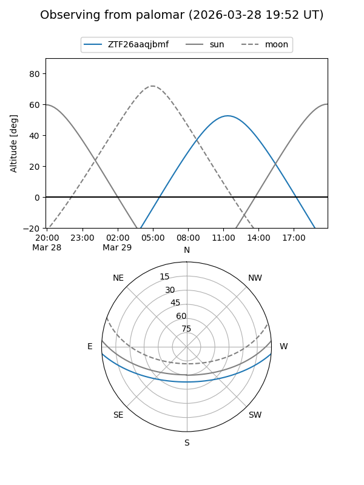

ZTF26aaqjbmf
Target ZTF26aaqjbmf at 2026-03-29 13:33
Aliases and brokers:
FINK: link
Lasair: link
ALeRCE: link
alt names
ZTF26aaqjbmf (ztf,fink_ztf)
Coordinates:
equatorial (ra, dec) = 240.4595,-3.87812
equatorial (HMS+DMS) = 16:01:50.27,-03:52:41.23
galactic (l, b) = (6.4554,+34.60439)
Flags:
Photometry:
last ztfg=18.28, ztfr=17.42
1 ztfg, 1 ztfr detections
Lightcurve

Visibility


Additional plots